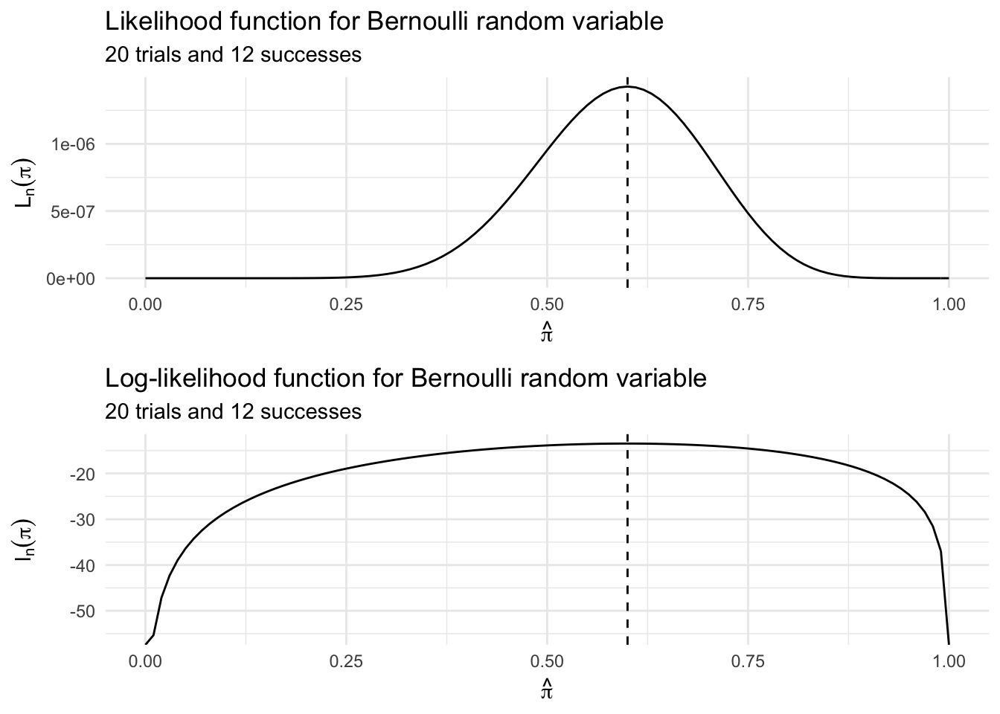
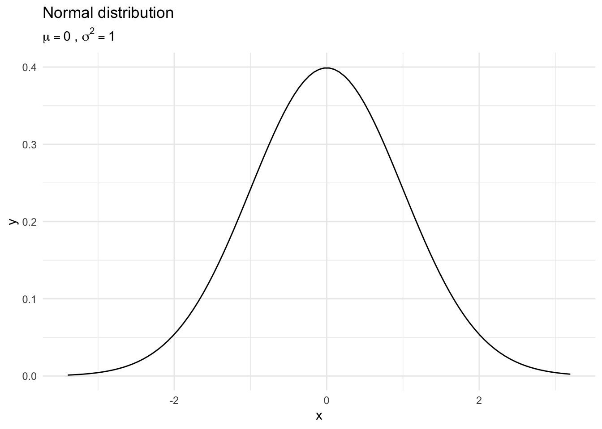
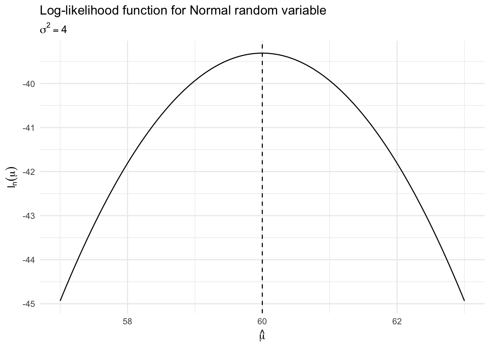

Parametric inference
library(tidyverse)
library(broom)
library(patchwork)
options(digits = 3)
set.seed(1234)
theme_set(theme_minimal())\[\newcommand{\E}{\mathrm{E}} \newcommand{\Var}{\mathrm{Var}} \newcommand{\Cov}{\mathrm{Cov}} \newcommand{\se}{\text{se}} \newcommand{\Lagr}{\mathcal{L}} \newcommand{\lagr}{\mathcal{l}}\]
Parametric models
Recall the form of parametric models
\[\xi \equiv f(x; \theta) : \theta \in \Theta\]
where \(\theta\) is an unknown parameter (or vector of parameters) \(\theta = (\theta_1, \ldots, \theta_k)\) that can only take values in the parameter space \(\Theta \subset \Re^k\). The problem of inference then reduces to the problem of estimating the parameter \(\theta\).
How can we know the distribution that generated the data is in some parametric model? That is, how do we know a random variable was generated by a Normal distribution? Exponential distribution? Binomial distribution? In truth, we rarely have precise knowledge of this. In this way, nonparametric models can be superior since they do not impose any assumptions about the global form of a random variable or a function. However, many times we can use distributions of known random variables with well-understood properties to approximate a parametric model of the actual random variable. For example, counts of the occurrence of events are known from past experience to be reasonably approximated by a Poisson model.
Parameter of interest
Often we are only interested in some function \(T(\theta)\). For example, if \(X \sim N(\mu, \sigma^2)\) then the parameter is \(\theta = (\mu, \sigma)\). If the goal is to estimate \(\mu\), then \(\mu = T(\theta)\) is called the parameter of interest and \(\sigma\) is called a nuisance parameter. The parameter of interest \(T(\theta)\) is sometimes a simple function and sometimes complex.
Example: Normal distribution
Let \(X_1, \ldots, X_n \sim N(\mu, \sigma^2)\). The parameter is \(\theta = (\mu, \sigma)\) and the parameter space is \(\Theta = \{(\mu, \sigma): \mu \in \Re, \sigma < 0 \}\). Suppose that \(X_i\) is average daily temperature in Chicago and suppose we are interested in \(\tau\), the fraction of days in the year which have an average temperature above 50 degrees F. Let \(Z\) denote a standard Normal random variable. Then
\[ \begin{align} \tau &= \Pr (X > 50) = 1 - \Pr (X < 50) = 1 - \Pr \left( \frac{X - \mu}{\sigma} < \frac{50 - \mu}{\sigma} \right) \\ &= 1 - \Pr \left(Z < \frac{50 - \mu}{\sigma} \right) = 1 - \Phi \left( \frac{50 - \mu}{\sigma} \right) \end{align} \]
The parameter of interest is \(\tau = T(\mu, \sigma) = 1 - \Phi \left( \frac{50 - \mu}{\sigma} \right)\).
Maximum likelihood
The most common method for estimating parameters in a parametric model is the maximum likelihood method. Let \(X_1, \ldots, X_n\) be IID with PDF \(f(x; \theta)\). The likelihood function is defined by
\[\Lagr_n(\theta) = \prod_{i=1}^n f(X_i; \theta)\]
The log-likelihood function is defined by \(\lagr_n (\theta) = \log \Lagr_n(\theta)\). The likelihood function is the joint density of the data, except we treat it as a function of the parameter \(\theta\). However the likelihood function is not a density function – it is a likelihood function. In general, it is not true that \(\Lagr_n(\theta)\) integrates to 1 (with respect to \(\theta\)).
The maximum likelihood estimator (MLE), denoted by \(\hat{\theta}_n\), is the value of \(\theta\) that maximizes \(\Lagr_n(\theta)\). The maximum of \(\lagr_n(\theta)\) occurs at the same place as the maximum of \(\Lagr_n(\theta)\), so maximizing the log-likelihood leads to the same answer as maximizing the likelihood. Often, it is just easier to work with the log-likelihood.
If we multiply \(\Lagr_n(\theta)\) by any positive constant \(c\) (not depending on $) then this will not change the MLE. Thus we shall drop constants in the likelihood function.
Example: Bernoulli distribution
Suppose that \(X_1, \ldots, X_n \sim \text{Bernoulli} (\pi)\). The probability function is
\[f(x; \pi) = \pi^x (1 - \pi)^{1 - x}\]
for \(x = 0,1\). The unknown parameter is \(\pi\). Then,
\[ \begin{align} \Lagr_n(\pi) &= \prod_{i=1}^n f(X_i; \pi) \\ &= \prod_{i=1}^n \pi^{X_i} (1 - \pi)^{1 - X_i} \\ &= \pi^S (1 - \pi)^{n - S} \end{align} \]
where \(S = \sum_{i} X_i\). The log-likelihood function is therefore
\[\lagr_n (\pi) = S \log(\pi) + (n - S) \log(1 - \pi)\]
To analytically solve for \(\hat{\pi}_n\), take the derivative of \(\lagr_n (\pi)\), set it equal to 0, and solve for \(\hat{\pi}_n = \frac{S}{n}\).
# loglikelihood function for plotting
lik_bern <- function(p, S, n){
p^S * (1 - p)^(n - S)
}
log_lik_bern <- function(p, S, n){
S * log(p) + (n - S) * log(1 - p)
}
# calculate likelihood values
bern <- data_frame(x = seq(0, 1, by = 0.01),
lik = lik_bern(x, 12, 20),
loglik = log_lik_bern(x, 12, 20))
ggplot(bern, aes(x, lik)) +
geom_line() +
geom_vline(xintercept = (12 / 20), linetype = 2) +
labs(title = "Likelihood function for Bernoulli random variable",
subtitle = "20 trials and 12 successes",
x = expression(hat(pi)),
y = expression(L[n](pi))) +
ggplot(bern, aes(x, loglik)) +
geom_line() +
geom_vline(xintercept = (12 / 20), linetype = 2) +
labs(title = "Log-likelihood function for Bernoulli random variable",
subtitle = "20 trials and 12 successes",
x = expression(hat(pi)),
y = expression(l[n](pi))) +
plot_layout(ncol = 1)
Example: Normal distribution
Let \(X_1, \ldots, X_n \sim N(\mu, \sigma^2)\). The parameter is \(\theta = (\mu, \sigma)\) and the likelihood function (ignoring some constants) is:
\[ \begin{align} \Lagr_n (\mu, \sigma) &= \prod_i \frac{1}{\sigma} \exp \left[ - \frac{1}{2\sigma^2} (X_i - \mu)^2 \right] \\ &= \frac{1}{\sigma^n} \exp \left[ - \frac{1}{2\sigma^2} \sum_i (X_i - \mu)^2 \right] \\ &= \frac{1}{\sigma^n} \exp \left[ \frac{n S^2}{2 \sigma^2} \right] \exp \left[ - \frac{n (\bar{X} - \mu)^2}{2 \sigma^2} \right] \end{align} \]
where \(\bar{X} = \frac{1}{n} \sum_i X_i\) is the sample mean and \(S^2 = \frac{1}{n} \sum_i (X_i - \bar{X})^2\). The log-likelihood is
\[\lagr_n (\mu, \sigma) = -n \log \sigma - \frac{nS^2}{2\sigma^2} - \frac{n(\bar{X} - \mu)^2}{2\sigma^2}\]
Calculating the first derivatives with respect to \(\mu\) and \(\sigma\), setting them equal to 0, and solving for \(\hat{\mu}, \hat{\sigma}\) leads to \(\hat{\mu} = \bar{X} = \E [X]\) and \(\hat{\sigma} = S = \sqrt{\Var[X]}\). So the mean and variance/standard deviation of a normal distribution are also maximum likelihood estimators.
Properties of maximum likelihood estimators
Under certain conditions, the maximum likelihood estimator \(\hat{\theta}_n\) possesses many properties that make it an appealing choice of estimatory. The main properties are:
- Consistency
- Equivariant
- Asymptotically Normal
- Asymptotically optimal or efficient
- Approximately the Bayes estimator
These properties generally hold true for random variables with large sample sizes and smooth conditions for \(f(x; \theta)\). If these requirements are not met, then MLE may not be a good estimator for the parameter of interest.
Consistency
The MLE is consistent, in that \(\hat{\theta}_n \xrightarrow{P} \theta_*\), where \(\theta_*\) denotes the true value of the parameter \(\theta\). Consistency means that the MLE converges in probability to the true value as the number of observations increases.
Equivariance
Equivariance indicates that if \(\hat{\theta}_n\) is the MLE of \(\theta\), then \(g(\hat{\theta}_n)\) is the MLE of \(g(\theta)\). Basically, the MLE estimator for a random variable transformed by a function \(g(x)\) is also the MLE estimator for the new random variable \(g(x)\). For example, let \(X_1, \ldots, X_n \sim N(\theta,1)\). The MLE for \(\theta\) is \(\hat{\theta}_n = \bar{X}_n\). Let \(\tau = e^\theta\). Then the MLE for \(\tau\) is \(\hat{\tau} = e^{\hat{\theta}} = e^{\bar{X}}\).
Asymptotic normality
Asymptotic normality indicates that the distribution of the MLE estimator is asymptotically normal. That is, let \(\se = \sqrt{\Var (\hat{\sigma}_n)}\).
\[\frac{\hat{\theta}_n - \theta_*}{\se} \leadsto N(0,1)\]
The distribution of the true standard error of \(\hat{\theta}_n\) is approximately a standard Normal distribution. Since we typically have to estimate the standard error from the data, it also holds true that
\[\frac{\hat{\theta}_n - \theta_*}{\widehat{\se}} \leadsto N(0,1)\]
The proof of this property is in the book. Informally, this means that the distribution of the MLE can be approximated with \(N(\theta, \widehat{\se}^2)\). This is what allows us to construct confidence intervals for point estimates like we saw previously. As long as the sample size is sufficiently large and \(f(x; \theta)\) is sufficiently smooth, this property holds true and we do not need to estimate actual confidence intervals for the MLE – the Normal approximation is sufficient.
Optimality
Suppose that \(X_1, \ldots, X_n \sim N(\theta, \sigma^2)\). The MLE is \(\hat{\sigma}_n = \bar{X}_n\). Another reasonable estimator of \(\theta\) is the sample median \(\tilde{\theta}_n\). The MLE satisfies
\[\sqrt{n} (\hat{\theta}_n - \theta) \leadsto N(0, \sigma^2)\]
It can be shown that the median satisfies
\[\sqrt{n} (\tilde{\theta}_n - \theta) \leadsto N \left(0, \sigma^2 \frac{\pi}{2} \right)\]
This means the median converges to the right value but has a larger variance than the MLE.
More generally, consider two estimators \(T_n\) and \(U_n\), and suppose that
\[ \begin{align} \sqrt{n} (T_n - \theta) &\leadsto N(0, t^2) \\ \sqrt{n} (U_n - \theta) &\leadsto N(0, u^2) \\ \end{align} \]
We define the asymptotic relative efficiency of \(U\) to \(T\) by \(\text{ARE}(U, T) = \frac{t^2}{u^2}\). In the Normal example, \(\text{ARE}(\tilde{\theta}_n, \hat{\theta}_n) = \frac{2}{\pi} \approx .63\). The interpretation is that if you use the median, you are effectively using only a fraction of the data and your estimate is not as optimal as the mean.
Fundamentally, if \(\hat{\theta}_n\) is the MLE and \(\tilde{\theta}_n\) is any other estimator, then
\[\text{ARE} (\tilde{\theta}_n, \hat{\theta}_n) \leq 1\]
Thus, the MLE has the smallest (asymptotic) variance and we say the MLE is efficient or asymptotically optimal.
Analytical calculation of MLE
Mean of the Normal variable
We presume the response variable \(Y\) is drawn from a Gaussian (normal) distribution with mean \(\mu\) and variance \(\sigma^2\):
\[\Pr(X_i = x_i) = \frac{1}{\sqrt{2\pi\sigma^2}} \exp \left[\frac{(X_i - \mu)^2}{2\sigma^2}\right]\]
data_frame(x = rnorm(1000, 0, 1)) %>%
ggplot(aes(x)) +
stat_function(fun = dnorm, args = list(mean = 0, sd = 1)) +
labs(title = "Normal distribution",
subtitle = expression(paste(mu == 0, " , ", sigma^{2} == 1)))
This is the density, or probability density function (PDF) of the variable \(Y\).
- The probability that, for any one observation \(i\), \(Y\) will take on the particular value \(y\).
- This is a function of \(\mu\), the expected value of the distribution, and \(\sigma^2\), the variability of the distribution around the mean.
We want to generate estimates of the parameters \(\hat{\mu}_n\) and \(\hat{\sigma}_n^2\) based on the data. For the normal distribution, the log-likelihood function is:
\[ \begin{align} \lagr_n(\mu, \sigma^2 | X) &= \log \prod_{i = 1}^{N}{\frac{1}{\sqrt{2\pi\sigma^2}} \exp \left[\frac{(X_i - \mu)^2}{2\sigma^2}\right]} \\ &= \sum_{i=1}^{N}{\log\left(\frac{1}{\sqrt{2\pi\sigma^2}} \exp \left[\frac{(X_i - \mu)^2}{2\sigma^2}\right]\right)} \\ &= -\frac{N}{2} \log(2\pi) - \left[ \sum_{i = 1}^{N} \ln{\sigma^2 - \frac{1}{2\sigma^2}} (X_i - \mu)^2 \right] \end{align} \]
Suppose we had a sample of assistant professor salaries:
| id | salary |
|---|---|
| 1 | 60 |
| 2 | 55 |
| 3 | 65 |
| 4 | 50 |
| 5 | 70 |
If we want to explain the distribution of possible assistant professor salaries given these data points, we could use maximum-likelihood estimation to find the \(\hat{\mu}\) that maximizes the likelihood of the data. We are testing different values for \(\mu\) to see what optimizes the function. If we have no regressors or predictors, \(\hat{\mu}\) is a constant. Furthermore, we treat \(\sigma^2\) as a nuisance parameter and hold it constant at \(\sigma^2 = 1\). The log-likelihood curve would look like this:
likelihood.normal.mu <- function(mu, sig2 = 1, x) {
# mu mean of normal distribution for given sig
# x vector of data
n = length(x)
a1 = (2*pi*sig2)^-(n/2)
a2 = -1/(2*sig2)
y = (x-mu)^2
ans = a1*exp(a2*sum(y))
return(log(ans))
}
data_frame(mu_hat = seq(57, 63, by = .05),
logLik = map_dbl(mu_hat, likelihood.normal.mu, x = prof$salary)) %>%
ggplot(aes(mu_hat, logLik)) +
geom_line() +
geom_vline(xintercept = mean(prof$salary), linetype = 2) +
labs(title = "Log-likelihood function for Normal random variable",
subtitle = expression(sigma^2 == 1),
x = expression(hat(mu)),
y = expression(l[n](mu)))
And the maximum is 60, which is the mean of the 5 sample observations. Notice our choice of value for \(\sigma^2\) doesn’t change our estimate \(\hat{\mu}_n\).
data_frame(mu_hat = seq(57, 63, by = .05),
logLik = map_dbl(mu_hat, likelihood.normal.mu, x = prof$salary, sig2 = 4)) %>%
ggplot(aes(mu_hat, logLik)) +
geom_line() +
geom_vline(xintercept = mean(prof$salary), linetype = 2) +
labs(title = "Log-likelihood function for Normal random variable",
subtitle = expression(sigma^2 == 4),
x = expression(hat(mu)),
y = expression(l[n](mu)))
Least squares regression
But more typically we want \(\mu\) to be a function of some other variable \(X\). We can write this as:
\[\E(Y) \equiv \mu = \beta_0 + \beta_{1}X_{i}\]
\[\Var (Y) = \sigma^2\]
Now we just substitute this equation for the systematic mean part (\(\mu\)) in the previous equations:
\[ \begin{align} \lagr_n(\beta_0, \beta_1, \sigma^2 | Y, X) &= \log \left[ \prod_{i = 1}^{N}{\frac{1}{\sqrt{2\pi\sigma^2}} \exp \left[\frac{(Y_i - \beta_0 - \beta_{1}X_{i})^2}{2\sigma^2}\right]} \right] \\ &= -\frac{N}{2} \log(2\pi) - \sum_{i = 1}^{N}\left[ \log{\sigma^2 - \frac{1}{2\sigma^2}} (Y_i - \beta_0 - \beta_{1}X_{i})^2 \right] \\ &\propto - \sum_{i = 1}^{N} \left[ \log{\sigma^2 - \frac{1}{2\sigma^2}} (Y_i - \beta_0 - \beta_{1}X_{i})^2 \right] \end{align} \]
If we are primarily concerned with estimating \(\beta_0\) and \(\beta_1\), we can drop all the constant terms related to \(\sigma^2\). Remember, it does not matter what that values is – the MLE will be the same regardless. So we can reduce the log-likelihood equation to
\[\lagr_n(\beta_0, \beta_1 | Y, X) = - \sum_{i = 1}^{N} (Y_i - \beta_0 - \beta_{1}X_{i})^2\]
Next we differentiate the equation with respect to \(\beta_0\) and \(\beta_1\), set the equations to 0, and solve for the appropriate values.
\[ \begin{align} \dfrac{\partial{ \lagr_n(\beta_0, \beta_1 | Y, X)}}{\partial \beta_0} & = -2 (\sum_{i=1}^n (Y_i - \beta_0 - \beta_1 X_i))\\ & = \sum_{i=1}^n -2Y_i + 2\beta_0 + 2\beta_1 X_i\\ 0 & = \sum_{i=1}^n -2Y_{i} + 2\beta_0 + 2\beta_1 X_i\\ 0 & = -2 \sum_{i=1}^n Y_{i} + 2\sum_{i=1}^n \beta_0 + 2\beta_1 \sum_{i=1}^n X_i\\ 0 & = -2 \sum_{i=1}^n Y_{i} + (n \times 2\beta_0) + 2\beta_1 \sum_{i=1}^n X_i\\ n \times 2\beta_0 & = 2 \sum_{i=1}^n Y_i - 2\beta_1 \sum_{i=1}^n X_i\\ \hat \beta_0 & = \dfrac{2 \sum_{i=1}^n Y_i}{2n} - \dfrac{2\beta_1 \sum_{i=1}^n X_i}{2n}\\ & = \dfrac{\sum_{i=1}^n Y_i}{n} - \beta_1\dfrac{ \sum_{i=1}^n X_i}{n}\\ \hat \beta_0 & = \bar{Y} - \beta_1 \bar{X} \end{align} \]
\[ \begin{align} \dfrac{\partial{ \lagr_n(\beta_0, \beta_1 | Y, X)}}{\partial \beta_1} & = \sum_{i=1}^n -2X_i(Y_i - \beta_0 - \beta_1 X_i) \\ & = \sum_{i=1}^n -2Y_iX_i + 2\beta_0X_i + 2\beta_1 X_i^2\\ 0 & = \sum_{i=1}^n -2Y_iX_i + 2\beta_0 \sum_{i=1}^nX_i + 2\beta_1 \sum_{i=1}^n X_i^2\\ & = \sum_{i=1}^n -2Y_iX_i + 2 (\bar{Y} - \beta_1 \bar{X}) \sum_{i=1}^nX_i + 2\beta_1 \sum_{i=1}^n X_i^2\\ & = \sum_{i=1}^n -2Y_iX_i + 2\bar{Y} \sum_{i=1}^nX_i - 2\beta_1 \bar{X}\sum_{i=1}^nX_i + 2\beta_1 \sum_{i=1}^n X_i^2\\ 2\beta_1 \sum_{i=1}^n X_i^2 - 2\beta_1 \bar{X}\sum_{i=1}^nX_i & = \sum_{i=1}^n 2Y_iX_i - 2\bar{Y} \sum_{i=1}^nX_i\\ \beta_1 ( \sum_{i=1}^n X_i^2 - \bar{X}\sum_{i=1}^nX_i ) & = \sum_{i=1}^n Y_iX_i - \bar{Y} \sum_{i=1}^nX_i\\ \hat \beta_1 & = \dfrac{ \sum_{i=1}^n Y_iX_i - \bar{Y} \sum_{i=1}^nX_i}{ \sum_{i=1}^n X_i^2 - \bar{X}\sum_{i=1}^nX_i}\\ \hat \beta_0 & = \bar{Y} - \hat{\beta}_1 \bar{X} \end{align} \]
\(\hat{\beta}_0, \hat{\beta}_1\) are the MLE for a least squares regression model. These are the same values as obtained via OLS. Hence the OLS estimator is also the MLE.
Computational calculation of the MLE
Analytical calculations of the MLE can prove to be intractable. Therefore we can use many of the same optimization approaches to find the MLE for a likelihood function. Consider the previous example with faculty salaries:
data_frame(mu_hat = seq(57, 63, by = .05),
logLik = map_dbl(mu_hat, likelihood.normal.mu, x = prof$salary, sig2 = 4)) %>%
ggplot(aes(mu_hat, logLik)) +
geom_line() +
geom_vline(xintercept = mean(prof$salary), linetype = 2) +
labs(title = "Log-likelihood function for Normal random variable",
subtitle = expression(sigma^2 == 4),
x = expression(hat(mu)),
y = expression(l[n](mu)))We used a grid search to exhaustively search through the defined solution space to calculate the value for \(\hat{\mu}\) which maximized the log-likelihood function. We could instead have used a standard optimization algorithm to determine this value.
Or for a linear regression problem, write the appropriate likelihood function and optimize over it.
log_lik_lm <- function(par, data.y, data.x) {
a.par <- par[1] # The current slope
b.par <- par[2] # The current intercept
err.sigma <- par[3] # The current error standard deviation
# Calculate the likelihood of each data point using dnorm
likelihoods <- suppressWarnings(dnorm(data.y, mean = data.x * a.par + b.par, sd = err.sigma))
# Calculate log-likelihoods of each data point
log.likelihoods <- log(likelihoods)
# return the sum of the log-likelihoods
sum(log.likelihoods)
}
# optimize for professor salary
optim(par = c(1, 5, 20), fn = log_lik_lm, data.y = prof$salary, data.x = prof$years,
control = list(fnscale = -1))## $par
## [1] 5.00e+00 4.50e+01 2.46e-10
##
## $value
## [1] 106
##
## $counts
## function gradient
## 502 NA
##
## $convergence
## [1] 1
##
## $message
## NULL# compare to lm()
summary(lm(salary ~ years, data = prof))## Warning in summary.lm(lm(salary ~ years, data = prof)): essentially perfect
## fit: summary may be unreliable##
## Call:
## lm(formula = salary ~ years, data = prof)
##
## Residuals:
## 1 2 3 4 5
## -1.28e-14 3.34e-15 3.17e-15 3.10e-15 3.19e-15
##
## Coefficients:
## Estimate Std. Error t value Pr(>|t|)
## (Intercept) 4.50e+01 8.67e-15 5.19e+15 <2e-16 ***
## years 5.00e+00 2.61e-15 1.91e+15 <2e-16 ***
## ---
## Signif. codes: 0 '***' 0.001 '**' 0.01 '*' 0.05 '.' 0.1 ' ' 1
##
## Residual standard error: 8.27e-15 on 3 degrees of freedom
## Multiple R-squared: 1, Adjusted R-squared: 1
## F-statistic: 3.66e+30 on 1 and 3 DF, p-value: <2e-16Acknowledgements
- Material drawn from All of Statistics by Larry Wasserman
Session Info
devtools::session_info()## Session info -------------------------------------------------------------## setting value
## version R version 3.5.1 (2018-07-02)
## system x86_64, darwin15.6.0
## ui X11
## language (EN)
## collate en_US.UTF-8
## tz America/Chicago
## date 2018-11-15## Packages -----------------------------------------------------------------## package * version date source
## assertthat 0.2.0 2017-04-11 CRAN (R 3.5.0)
## backports 1.1.2 2017-12-13 CRAN (R 3.5.0)
## base * 3.5.1 2018-07-05 local
## bindr 0.1.1 2018-03-13 CRAN (R 3.5.0)
## bindrcpp 0.2.2 2018-03-29 CRAN (R 3.5.0)
## broom * 0.5.0 2018-07-17 CRAN (R 3.5.0)
## cellranger 1.1.0 2016-07-27 CRAN (R 3.5.0)
## cli 1.0.0 2017-11-05 CRAN (R 3.5.0)
## colorspace 1.3-2 2016-12-14 CRAN (R 3.5.0)
## compiler 3.5.1 2018-07-05 local
## crayon 1.3.4 2017-09-16 CRAN (R 3.5.0)
## datasets * 3.5.1 2018-07-05 local
## devtools 1.13.6 2018-06-27 CRAN (R 3.5.0)
## digest 0.6.18 2018-10-10 cran (@0.6.18)
## dplyr * 0.7.8 2018-11-10 cran (@0.7.8)
## evaluate 0.11 2018-07-17 CRAN (R 3.5.0)
## forcats * 0.3.0 2018-02-19 CRAN (R 3.5.0)
## ggplot2 * 3.1.0 2018-10-25 cran (@3.1.0)
## glue 1.3.0 2018-07-17 CRAN (R 3.5.0)
## graphics * 3.5.1 2018-07-05 local
## grDevices * 3.5.1 2018-07-05 local
## grid 3.5.1 2018-07-05 local
## gtable 0.2.0 2016-02-26 CRAN (R 3.5.0)
## haven 1.1.2 2018-06-27 CRAN (R 3.5.0)
## hms 0.4.2 2018-03-10 CRAN (R 3.5.0)
## htmltools 0.3.6 2017-04-28 CRAN (R 3.5.0)
## httr 1.3.1 2017-08-20 CRAN (R 3.5.0)
## jsonlite 1.5 2017-06-01 CRAN (R 3.5.0)
## knitr 1.20 2018-02-20 CRAN (R 3.5.0)
## lattice 0.20-35 2017-03-25 CRAN (R 3.5.1)
## lazyeval 0.2.1 2017-10-29 CRAN (R 3.5.0)
## lubridate 1.7.4 2018-04-11 CRAN (R 3.5.0)
## magrittr 1.5 2014-11-22 CRAN (R 3.5.0)
## memoise 1.1.0 2017-04-21 CRAN (R 3.5.0)
## methods * 3.5.1 2018-07-05 local
## modelr 0.1.2 2018-05-11 CRAN (R 3.5.0)
## munsell 0.5.0 2018-06-12 CRAN (R 3.5.0)
## nlme 3.1-137 2018-04-07 CRAN (R 3.5.1)
## patchwork * 0.0.1 2018-09-06 Github (thomasp85/patchwork@7fb35b1)
## pillar 1.3.0 2018-07-14 CRAN (R 3.5.0)
## pkgconfig 2.0.2 2018-08-16 CRAN (R 3.5.1)
## plyr 1.8.4 2016-06-08 CRAN (R 3.5.0)
## purrr * 0.2.5 2018-05-29 CRAN (R 3.5.0)
## R6 2.3.0 2018-10-04 cran (@2.3.0)
## Rcpp 1.0.0 2018-11-07 cran (@1.0.0)
## readr * 1.1.1 2017-05-16 CRAN (R 3.5.0)
## readxl 1.1.0 2018-04-20 CRAN (R 3.5.0)
## rlang 0.3.0.1 2018-10-25 CRAN (R 3.5.0)
## rmarkdown 1.10 2018-06-11 CRAN (R 3.5.0)
## rprojroot 1.3-2 2018-01-03 CRAN (R 3.5.0)
## rstudioapi 0.7 2017-09-07 CRAN (R 3.5.0)
## rvest 0.3.2 2016-06-17 CRAN (R 3.5.0)
## scales 1.0.0 2018-08-09 CRAN (R 3.5.0)
## stats * 3.5.1 2018-07-05 local
## stringi 1.2.4 2018-07-20 CRAN (R 3.5.0)
## stringr * 1.3.1 2018-05-10 CRAN (R 3.5.0)
## tibble * 1.4.2 2018-01-22 CRAN (R 3.5.0)
## tidyr * 0.8.1 2018-05-18 CRAN (R 3.5.0)
## tidyselect 0.2.5 2018-10-11 cran (@0.2.5)
## tidyverse * 1.2.1 2017-11-14 CRAN (R 3.5.0)
## tools 3.5.1 2018-07-05 local
## utils * 3.5.1 2018-07-05 local
## withr 2.1.2 2018-03-15 CRAN (R 3.5.0)
## xml2 1.2.0 2018-01-24 CRAN (R 3.5.0)
## yaml 2.2.0 2018-07-25 CRAN (R 3.5.0)This work is licensed under the CC BY-NC 4.0 Creative Commons License.